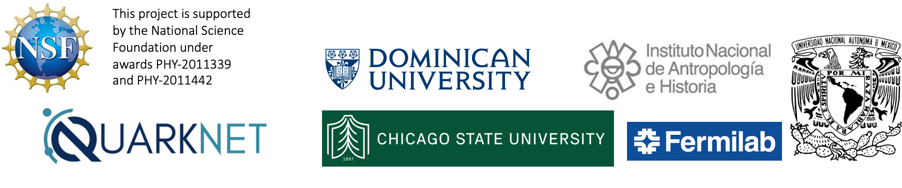

|
To search for hidden chambers
in Kukulcan’s pyramid at the world heritage site in Chichen Itza, Mexico
using cosmic ray muons.
We’re building a detector to
track the path of cosmic ray muons using technology common to High Energy
Physics experiments. By measuring the rate of muons that traverse the
pyramid, we can estimate how much material the muons passed through in all
directions. Comparing that to the known material, we can search for any
undiscovered chambers buried inside the pyramid. This is much like an
x-ray, however our detector is small compared to the size of the pyramid
and muons are a million times more energetic than the x-ray photons.
|
Edmundo Garcia-Solis, Austin Harton (Chicago State University)
Joseph Sagerer (Dominican University)
Mark Adams
(UIC/Fermilab-QuarkNet)
Sten Hansen (Fermilab-Retired)
Eduardo
Pérez de Heredia (Tecnologia Zero)
Jose Osorio, Marco Antonio Santos
Ramirez (Instituto Nacional de Arqueologia e Historia - INAH)
Arturo
Menchaca Rocha, Azucena Cervantes, Hesiquio Vargas (Universidad Nacional
Autnoma de Mexico - UNAM)
